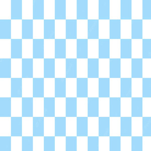
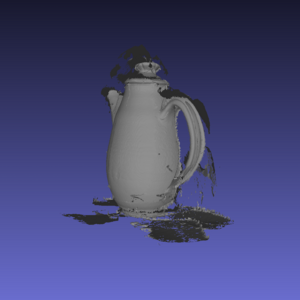

Nice to meet you virtually! I am currently a senior at UC Irvine majored in computer science. My interests mainly lie in deep learning, machine learning, natural language processing, etc. I am open to any kinds of real-world applications using deep learning frameworks. I intended to be a machine learning/deep learning scientist in my future career.
GPA: 3.953; ICS Honor Program; Dean's Honor List

